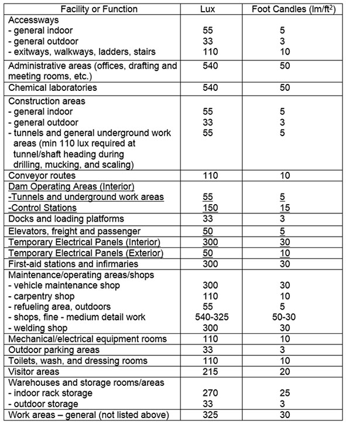

07.B Lighting Levels
07.B.01–07.B.06
07.B.01 While work is in progress, offices, facilities, accessways, working areas, construction roads, etc., shall be lighted by at least the minimum light intensities specified in Table 7-1. Illumination readings shall be taken and recorded whenever proper lighting of an area is in question. A calibrated light meter shall be provided, maintained and used as necessary to provide illumination readings.
07.B.02 Office lighting shall be a minimum of 50 foot candles (lm/ft2) or 540 luminance (lx) at the working surface, in accordance with the Illuminating Engineering Society of North America (IESNA) Handbook, RP-1. In office areas, attention shall be paid to the control of glare.
07.B.03 Roadway lighting shall be in accordance with IESNA RP-8.
07.B.04 Marine lighting shall be in accordance with American Bureau of Shipping, Guide for Crew Habitability on Ships.
07.B.05 Means of egress.
- Means of egress shall be illuminated, with emergency and non-emergency lighting, to provide a minimum of 5 lm/ft2, (55 lx), measured at the floor. > Reference IESNA Handbook.
- The illumination shall be arranged so that the failure of any single lighting unit, including the burning out of an electric bulb, will not leave any area darkened to the point of impeding the means of egress.
07.B.06 If work is to be performed at night, a night operations lighting plan shall be developed to ensure that all activities, areas and operations are adequately illuminated to perform work safely. On-task lighting shall be in conformance with Table 7-1. Lighting near roadways and other public transportation areas shall be positioned as to avoid creating a glare hazard.
TABLE 7-1
Minimum Lighting Requirements

{kind=link}